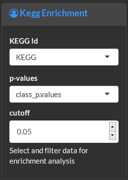
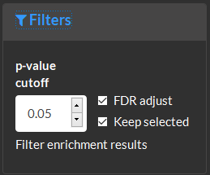
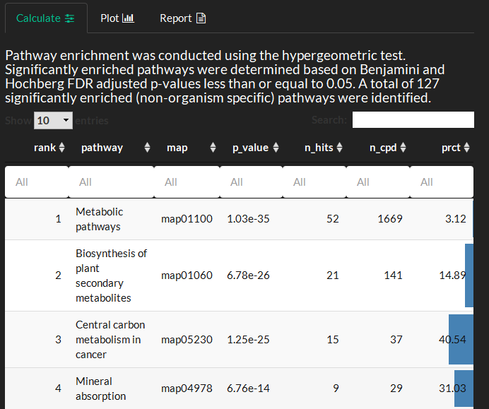
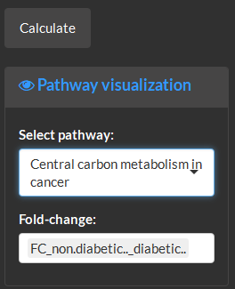
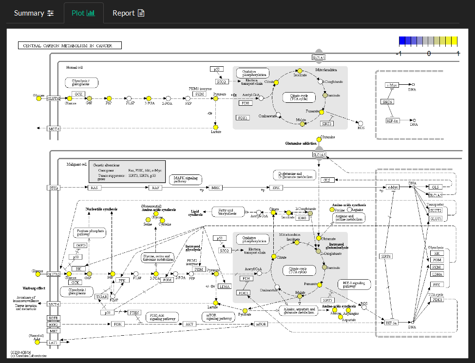
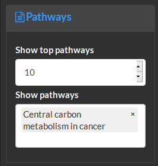

6 Pathway Enrichment
The pathway module is used to test for significant enrichment in biological pathways and visualize the results.
Enrichment
This analysis implements a hypergeometric test to identify significant enrichment in KEGG biochemical pathways based on statistical test p-values. Enrichment is calculated based on the KEGG database and reference (ko) organism.
Calculate
Select the name of the column with KEGG id for each variable. Filter which variables will be tested for pathway enrichment based on statistical test p-values and significance cut off.

Filter enrichment results based on the p-value cutoff and false dicovery rate (FDR) adjustment.

Overview the enrichment test methods and tabular results where: map is the KEGG pathway map id, n_hits is the number of significant variables from this pathway, n_cpd the number of compounds in the pathway and prct is the percent of enriched variables compared to total pathway variables. Selection of interesting pathways to investigate further could involve: 1) verifying that the pathway has a moderate minimum number of variables (e.g. > 10) 2) identifying low p-value and high prct enriched pathways 3) visualizing the network topology of enriched variables in the pathway (e.g. look for metabolic proximity of cha ges which may signify a functional module) . NOTE: Some very large and generic pathways such as Metabolic pathways can take a few minutes to render.

Plot
Select pathway name and identify the column to use as the fold-change to view variable changes mapped to the pathway.

The fold-changes normalized to between -1 and 1 are mapped onto pathway entities as described in the color bar in the top right corner.

Report
Select the number of top pathways (based on p-value) to show in table outputs and which pathways to show visualizations of.
